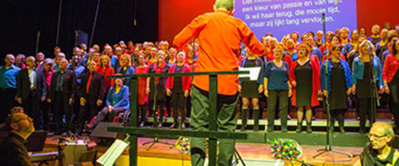

<div class="event-info">
	<div>
		<div class="img-wrap">
	
		</div>
		<div class="songs">
			<p>Dancing Queen</p>
			<p>Waterloo</p>
			<p>Treasure</p>
			<p>Shallow</p>
			<p>I'll Never Love Again</p>
			<p>Omarm</p>
			<p>Uptown Funk</p>
			<p>You've Got A Friend</p>
			<p>Soldaat van Oranje</p>
			<p>Hero</p>
			<p>YMCA</p>
			<p>Arcade</p>
			<p>This Is Me</p>
			<p>Bohemian Rhapsody</p>
			<p>Ik Heb Je Lief</p>
			<p>Proud Mary</p>
			<p>Leef</p>
		</div>
		<div class="content-wrap">
    <p><strong>SING-ALONG</strong></p>
	<p>Gezamenlijk sluiten we deze muzikale dag af met een Sing-along in de Othellozaal.</p>
	<p>Vele bekende songs zullen voorbij komen waarbij het - uiteraard - de bedoeling is dat deze luidkeels meegezongen gaan worden.</p>
	<p>&nbsp;</p>
	<p><a href="https://www.hetpark.nl/programma/11221/SING_ALONG/KOREN_LAAT_JE_HOORN/" target="_blank">Tickets Sing-along</a></p>
	<p><a href="https://secure.ticketunie.com/ires/stap1.aspx?t=305&c=1&x=65772168&s=7959C81FCDE4F8435BC6BCBFBE90506FEDA1B8DE&e=2&m=1&id=81" target="_blank">Combikaart</a></p>
		</div>
	</div>
</div>
